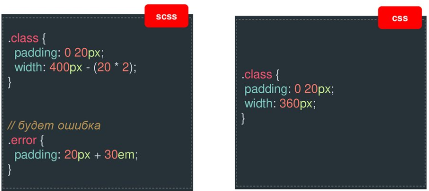
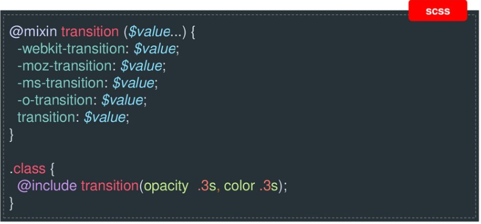
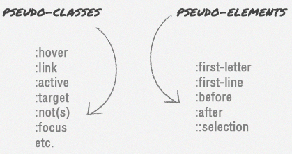
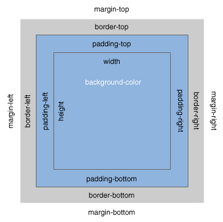

Синтаксис SCSS
$переменная = значение;
селектор {
свойство: значение;
другое свойство: значение;
&селектор {
свойство: $переменная;
}
}
Арифмитические операции

Примеси (mixins) с несколькими параметрами

Циклы

Псевдоэлементы/ псевдоклассы
Вставляются в DOM и могут рассматриваться как свободные элементы span, которые могут иметь текст, который исходит из CSS

https://webref.ru/css#pseudo-class
Разновидности CSS свойств
- цвет
- фон и границы
- текст
- списки
- анимация
- трансформация
- переходные эффекты
- изображения
- отступы внетренние и внешние
- позиционирование
- размер
- тени и прозрачность
- таблицы
- блочность/ поток элементов
Отображение элементов
Свойство display:
block
inline
inline-block
table
flex
Позиционирование
Свойство position:
static
relative
absolute
fixed
Обтекание элементов (float)
|
Элементы выпадают из потока
Свойство float:
left
right
none
* обёртка теряет свою высоту
|

|
|
внутренние — padding
внешние — margin
* значения задаются по часовой стрелке
|

|
Преффиксы
- -webkit-: браузеры Chrome, Safari
- -moz-: браузер Mozilla Firefox
- -ms-: браузер Internet Explorer
- Пишите css-код в одном стиле
- Аккуратно пользуйтесь приоритетностью в стилях
- Используйте шаблонность
- Используйте комментарии
- Используйте файл сброса*
* normalize